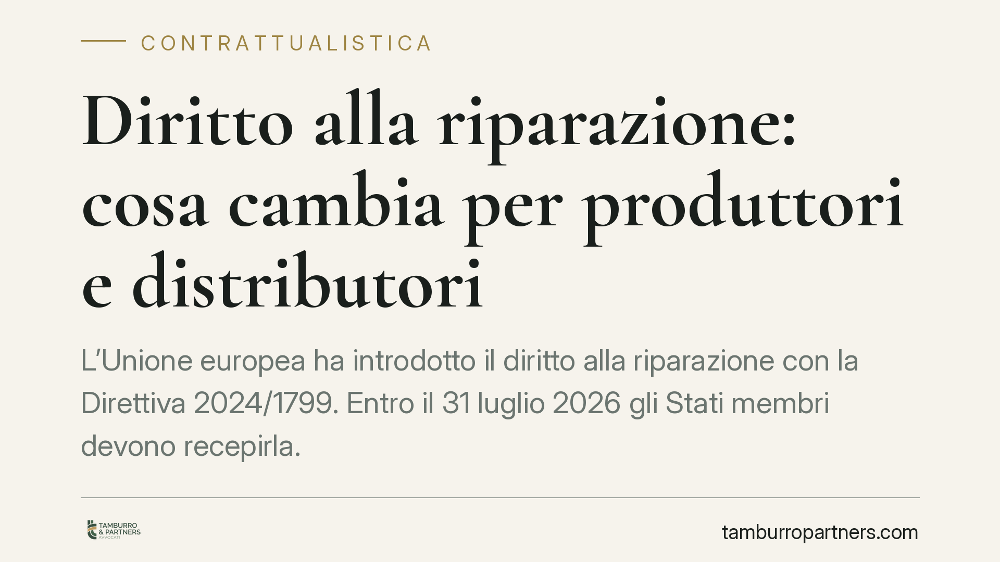

Diritto alla riparazione: cosa cambia per produttori e distributori
L'Unione europea ha introdotto il diritto alla riparazione con la Direttiva 2024/1799. Entro il 31 luglio 2026 gli Stati membri devono recepirla. Per produttori, importatori e distributori di elettrodomestici e dispositivi elettronici cambia il quadro degli obblighi: dalla riparazione dei beni difettosi all'estensione della garanzia. Vediamo cosa prevede e come prepararsi.

Il quadro normativo
La Direttiva (UE) 2024/1799, nota come *Right to Repair*, interviene sul diritto alla riparazione dei beni di consumo. Il termine per il recepimento negli ordinamenti nazionali è fissato al 31 luglio 2026; da tale data decorreranno, in linea di principio, le misure attuative. Alcune fonti indicano una decorrenza applicativa successiva (22 ottobre 2026): il dato va confermato con la pubblicazione del testo definitivo del decreto di recepimento, in corso di definizione al momento in cui scriviamo.
La direttiva si innesta su due corpi normativi già esistenti: il Codice del consumo (D.lgs. 206/2005) e la Direttiva (UE) 2019/771 sulla vendita di beni, che disciplina la garanzia legale di conformità biennale. Il nuovo intervento non sostituisce questi presidi: li affianca, introducendo un obbligo di riparazione anche oltre il perimetro della garanzia legale, per le categorie di prodotto individuate dalla normativa europea.
Cosa prevede il diritto alla riparazione
Il nucleo della disciplina è l'obbligo, a carico dei produttori, di riparare determinati beni difettosi. L'obbligo riguarda le categorie elencate negli allegati della direttiva e coordinate con i regolamenti ecodesign settoriali (progettazione ecocompatibile), che fissano per ciascuna tipologia di prodotto — lavatrici, lavastoviglie, frigoriferi, smartphone, tablet e altri — requisiti e tempi specifici di disponibilità dei pezzi di ricambio e dei servizi di riparazione.
È qui che serve prudenza interpretativa. L'affermazione per cui l'obbligo scatterebbe "sempre, anche a garanzia scaduta" è imprecisa. L'obbligo esiste entro i limiti temporali stabiliti dai regolamenti ecodesign applicabili a ciascuna categoria: non è un dovere illimitato nel tempo, ma ancorato alla durata prevista per quel tipo di bene.
La riparazione deve avvenire a un prezzo ragionevole. La nozione è volutamente elastica e sarà oggetto di contenzioso: in assenza di parametri tariffari predefiniti, l'onere di dimostrare la ragionevolezza del prezzo tenderà a gravare sul produttore, chiamato a giustificare il corrispettivo rispetto al costo effettivo del servizio e ai prezzi di mercato.
L'estensione della garanzia
La direttiva modifica la Direttiva 2019/771 prevedendo che, quando il consumatore opti per la riparazione del bene non conforme nell'ambito della garanzia legale, il periodo di responsabilità del venditore si estenda di dodici mesi dopo l'effettuazione della riparazione. La formulazione esatta e il coordinamento con il termine biennale ordinario andranno verificati sul testo di recepimento: il meccanismo premia la scelta della riparazione rispetto alla sostituzione, in coerenza con la finalità di sostenibilità della direttiva.
Le sanzioni
I testi in circolazione indicano una forcella sanzionatoria compresa tra 5.000 e 50.000 euro. Si tratta di un dato indicativo, da ancorare all'articolo preciso del decreto di recepimento una volta pubblicato. Fino ad allora, suggeriamo di non assumerlo come definitivo nelle valutazioni di rischio aziendale.
Implicazioni pratiche
Il nuovo assetto tocca attori diversi, con responsabilità distinte:
- i produttori sono i principali destinatari dell'obbligo di riparazione e della disponibilità dei ricambi;
- gli importatori subentrano negli obblighi del produttore quando questi non è stabilito nell'Unione;
- i distributori devono informare correttamente i consumatori e gestire il flusso delle richieste;
- i riparatori indipendenti acquisiscono un ruolo di mercato rafforzato, con diritto di accesso a ricambi e informazioni tecniche.
Per le imprese della filiera il tema non è solo adempimentale: incide sulla progettazione dei prodotti, sulla logistica dei ricambi, sulla contrattualistica con la rete di assistenza e sulle politiche di prezzo del servizio post-vendita.
Cosa fare in concreto
- Mappate le categorie di prodotto trattate e verificate quali regolamenti ecodesign le disciplinano, con i relativi obblighi di ricambistica e tempistica.
- Rivedete i contratti con centri di assistenza e riparatori, prevedendo clausole sull'accesso ai ricambi e sul prezzo del servizio.
- Predisponete una procedura documentata per determinare e giustificare il "prezzo ragionevole" della riparazione.
- Aggiornate le informative al consumatore sulla garanzia legale e sull'estensione di dodici mesi collegata alla riparazione.
- Monitorate la pubblicazione del decreto di recepimento per confermare date, sanzioni e perimetro applicativo prima di consolidare le procedure interne.
Consigliamo di avviare l'analisi di impatto con anticipo rispetto al termine di recepimento: l'adeguamento dei processi produttivi e logistici richiede tempi non comprimibili.
---
Contributo informativo a cura di Tamburro & Partners - Avv. Giuseppe Tamburro. Non costituisce parere legale.
Ogni contratto ha il suo equilibrio.
Se vuoi una revisione delle clausole o una redazione su misura, scrivi allo studio. Ti rispondiamo entro un giorno lavorativo.